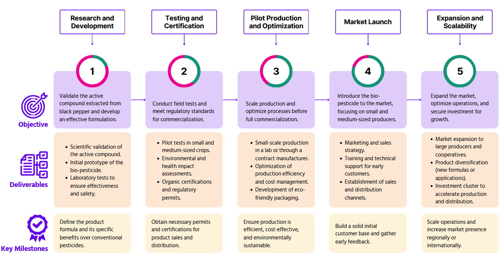

The following roadmap outlines the strategic steps for the development and commercialization of Agropip. This plan focuses on validating the efficacy of black pepper's active compounds, ensuring regulatory compliance, optimizing production, and preparing for a successful market launch. Each phase is designed to ensure that the product not only meets environmental and safety standards but also offers a sustainable alternative to conventional pesticides. By following this roadmap, we aim to secure a competitive position in the agricultural industry while contributing to eco-friendly farming practices.
